Префектура Хоккайдо · Ёити и Ники · еда и вино
Где пить вино Ёити: рёкан у станции, винный бар, соба на холме и ресторан из Gault&Millau
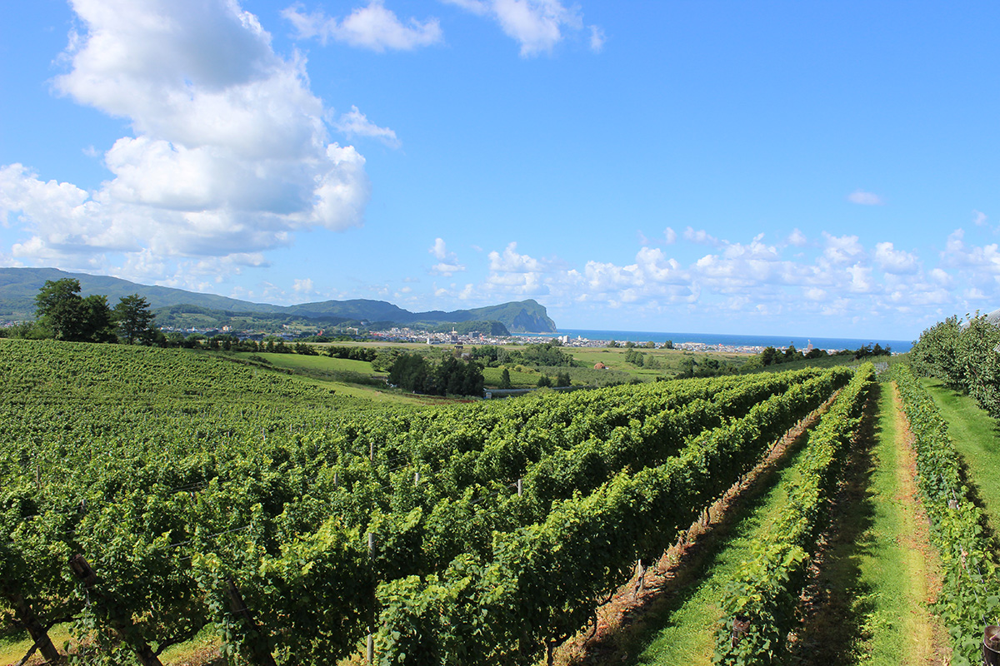
Вина из Ёити трудно купить: их делают мало, и раскупают быстро. Проще всего попробовать их на месте, за ужином у самих виноградников.
Город
Ёити: вино, виски и море
Ёити стоит на берегу Японского моря, на западе Хоккайдо. Виноград для вина здесь выращивают с 1980-х годов, и в 2025 году в городе было больше 50 таких хозяйств. Прохладный климат и малое количество дождей в сезон созревания винограда сделали Ёити одним из главных винных районов страны, и в 2025 году виноделен в городе было уже около двадцати. Ёити к тому же давно известен своим виски.
Долгое время выпить местное вино в самом городе было почти негде, и открытых для гостей виноделен здесь до сих пор немного. Ниже места, где вино Ёити подают вместе с местной едой, у станции и среди виноградников соседнего городка Ники.
В феврале 2025 года Ёити заключил договор о дружбе с бургундской деревней Жевре-Шамбертен, одним из самых знаменитых винных мест Франции. Города договорились обмениваться опытом в виноградарстве, виноделии и гастрономии: общего у них много, от климата до почвы.
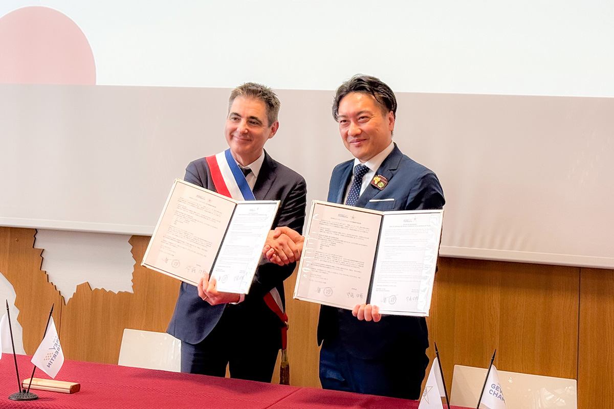
Глава города сам сдал экзамены на винного эксперта Японской ассоциации сомелье и на третий уровень международного диплома WSET. Он хочет, чтобы в Ёити ехали ради вина и еды.
«Ёити знают по вину, которое делают с прицелом на мировой рынок, но это ещё и один из главных городов японского виски. Следите за тем, что будет дальше в городе хорошего вина и хорошей еды»
глава города Ёити
Японская кухня
«Какуто Токусимая»: рёкан напротив станции
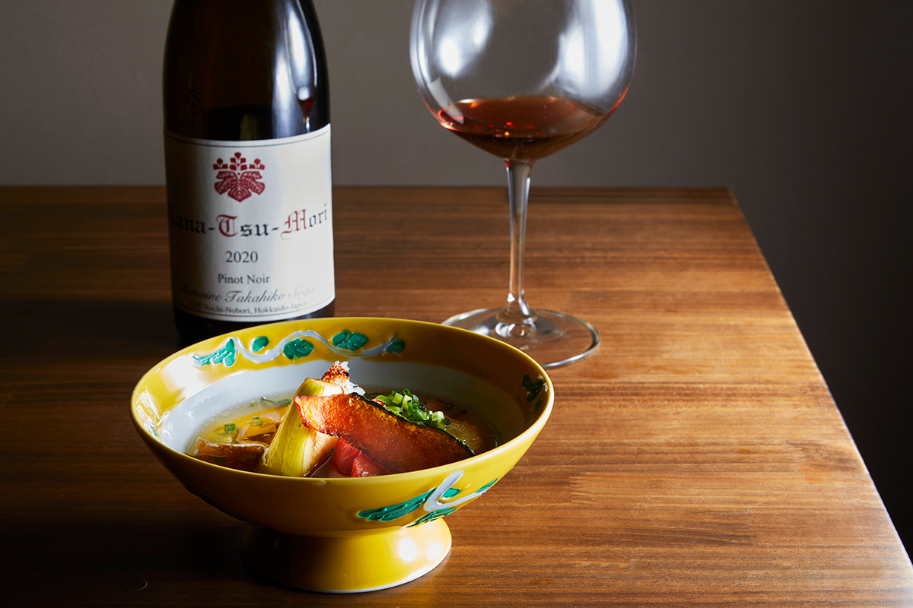
История «Какуто Токусимая» началась около ста лет назад, когда переселенец с острова Сикоку, из префектуры Токусима, открыл гостиницу прямо напротив станции Ёити. Название до сих пор напоминает о родине основателя. Хозяин в четвёртом поколении учился в старинном ресторане в Киото и всерьёз занялся кухней. Со временем «Какуто» стал для горожан главным японским рестораном: сюда идут отмечать праздники и собирать важные застолья.
Вина здесь долго не подавали: считалось, что японской кухне оно ни к чему. Всё изменила пандемия коронавируса, когда не стало ни постояльцев, ни гостей ресторана. Такахико Сога, основатель винодельни Domaine Takahiko, предложил хозяину подавать местное вино, чтобы привлечь гостей, и стал отдавать «Какуто» свои бутылки в первую очередь. Вслед за ним помогать начали и винодельни его учеников.
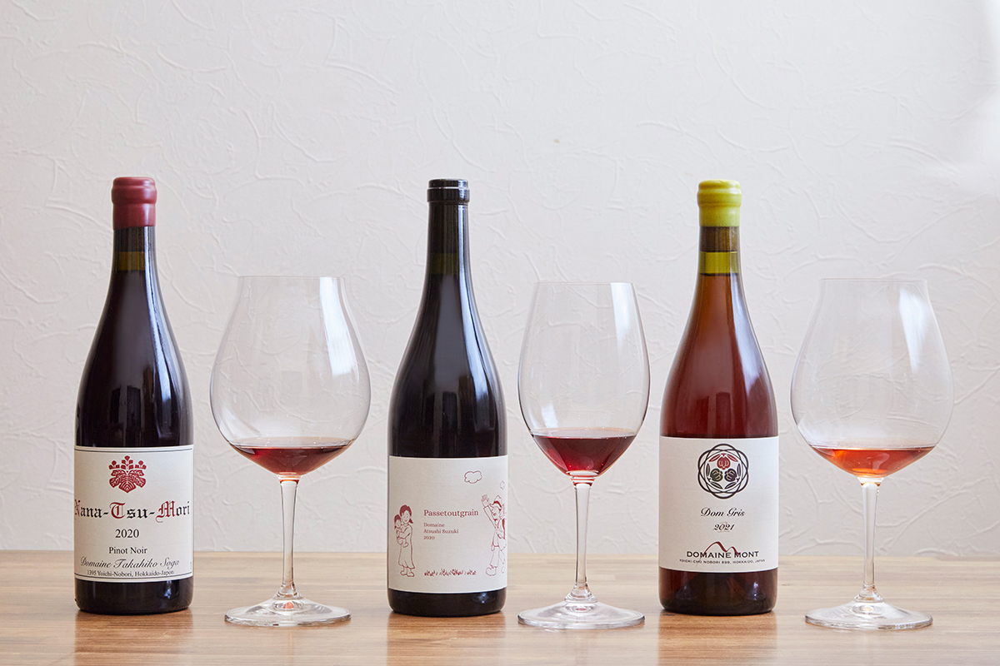
Так появился ужин «Vin de дзикодзэн»: к сезонным блюдам подают три бокала. Пино нуар «Нанацумори» лёгкий и одновременно сложный, «Пасту-грен» из пино нуар и цвайгельта яркий и мощный, а «Донгури» из пино гри плотное и насыщенное. Все три бокала ставят на стол сразу, так что сочетать их с блюдами можно как угодно. Вина редкие, поэтому наливают понемногу, но жалеть не придётся: в «Какуто» собраны и другие вина Ёити и соседней Ники, и их тоже подают бокалами. Многие из них в продаже почти не найти, так что заказать ещё бокал хочется почти наверняка.
Про вина Ёити говорят, что они хорошо идут к японской кухне. Здесь в этом легко убедиться. Ужинать можно только по предварительной брони, в день визита стол не бронируют.
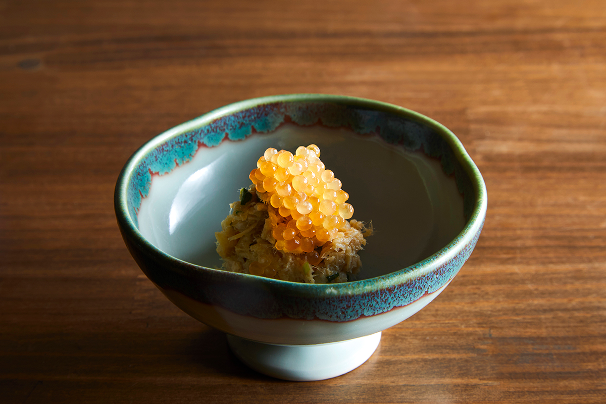
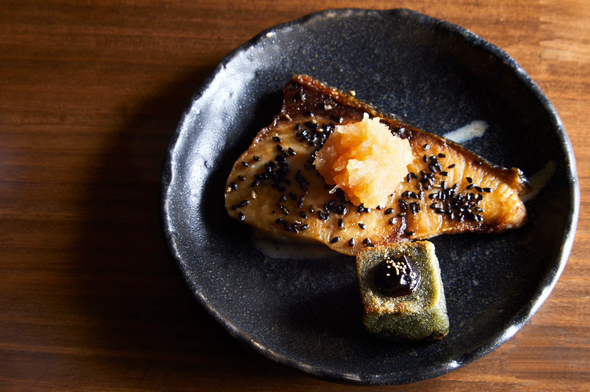
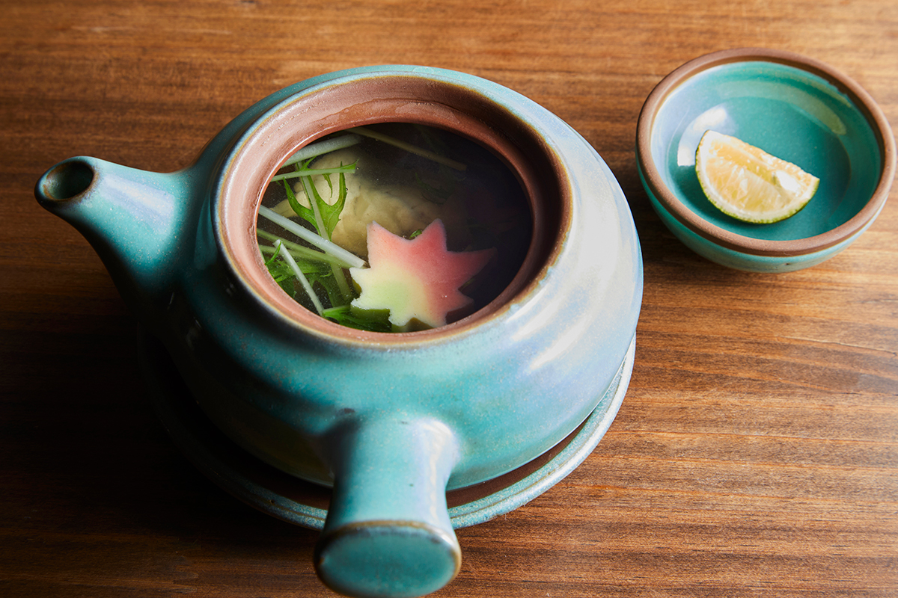
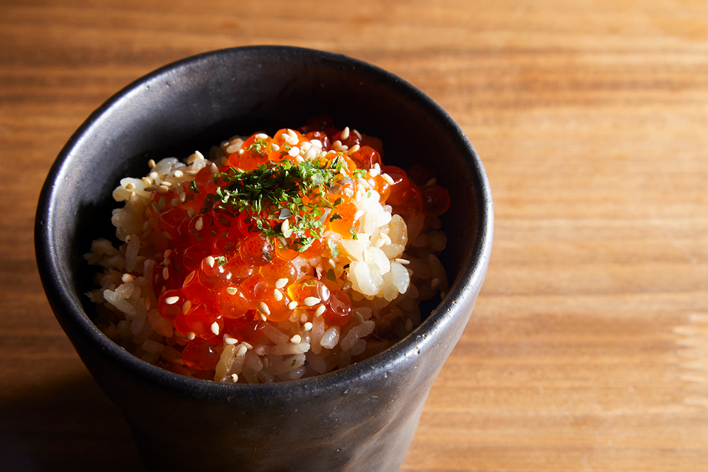
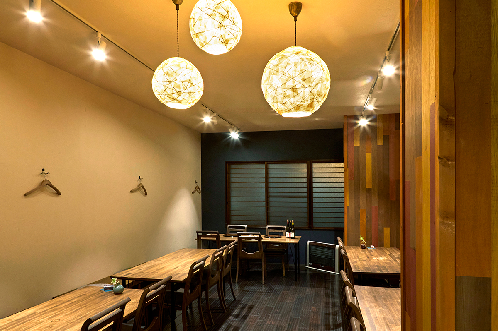
«Какуто Токусимая»
- Адрес
- префектура Хоккайдо, уезд Ёити, Ёити, Курокава-тё, 8-12
- Телефон
- +81 135-22-6369
- Часы работы
- по времени брони
- Выходные
- нерегулярно
- Цены / Вход
- ужин «Vin de дзикодзэн» (блюда и три вина) 7700 и 9900 иен
Винный бар
Qunpue wine & cafe: вино с новостями виноделен
Название бара значит «кунпу», лёгкий ветер, который летом проходит над виноградниками. Хозяйка работала сомелье в Нисэко, часто ездила по винодельням Ёити и влюбилась в их вина. Так появился Qunpue. В городе, где виноделен, открытых для гостей, немного, а мест, где можно просто выпить бокал вина, ещё меньше, бар стал местом знакомства с вином Ёити.
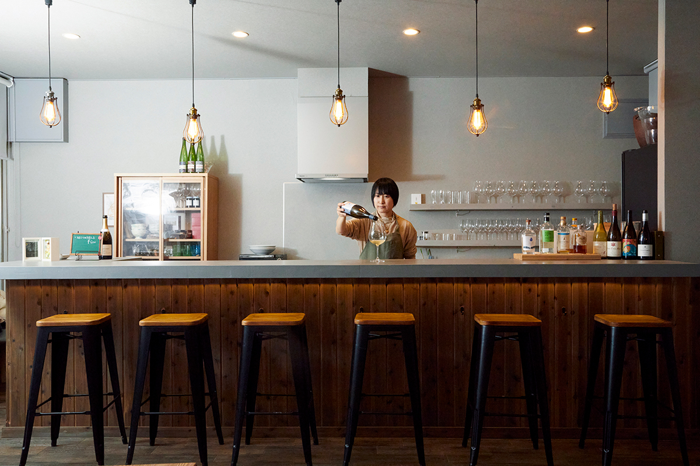
Винодельни бару помогают. Такахико Сога, например, в первую очередь отдаёт сюда своё «Нанацумори блан де нуар». Хозяйка в свободное время сама работает на винодельнях, поэтому за бокалом можно узнать, что нового у виноделов в этом сезоне.
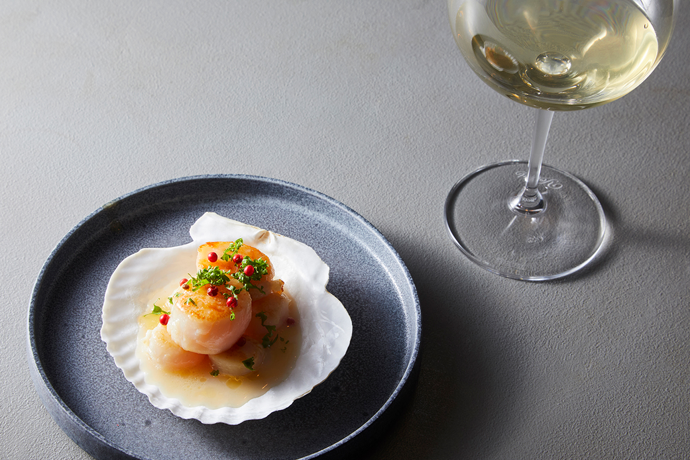
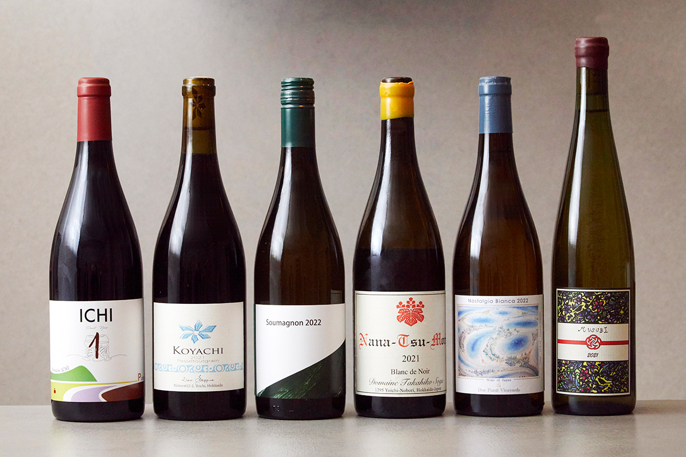
Qunpue wine & cafe
- Адрес
- префектура Хоккайдо, уезд Ёити, Ёити, Курокава-тё, 8-11
- Телефон
- +81 50-3176-6486
- Часы работы
- 18:00–21:00, с четверга по воскресенье 13:00–17:00 и 19:00–21:00
- Выходные
- нерегулярно
- Сайт
- qunpue.com
Ресторан при отеле
Yoichi LOOP: два колпака Gault&Millau
Yoichi LOOP открылся осенью 2020 года у станции Ёити как «отель, где наслаждаются вином». Номера похожи на свободные комнаты при винодельне. Ужин состоит из сезонных продуктов Ёити, соседних мест и всего Хоккайдо, а к нему подают вина Ёити, которые всё труднее купить.
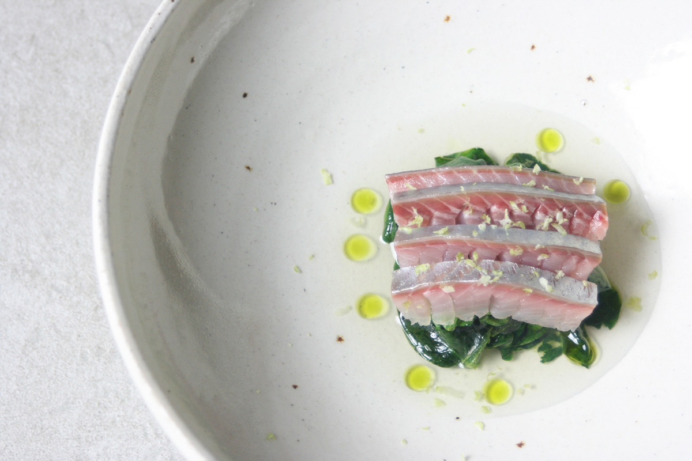
В марте 2025 года ресторан впервые попал во французский гид Gault&Millau. Этот гид основали в Париже в 1972 году журналисты Анри Го и Кристиан Мийо. Он выходит в 15 странах, японское издание появилось в 2017 году. Gault&Millau смотрит не только на сами блюда, но и на то, как местные продукты, вино и сакэ звучат по-современному. Yoichi LOOP получил два колпака, то есть ресторан, где чувствуется характер повара. В Ёити это второе заведение в гиде после Yoichi SAGRA, попавшего туда в 2018 году.
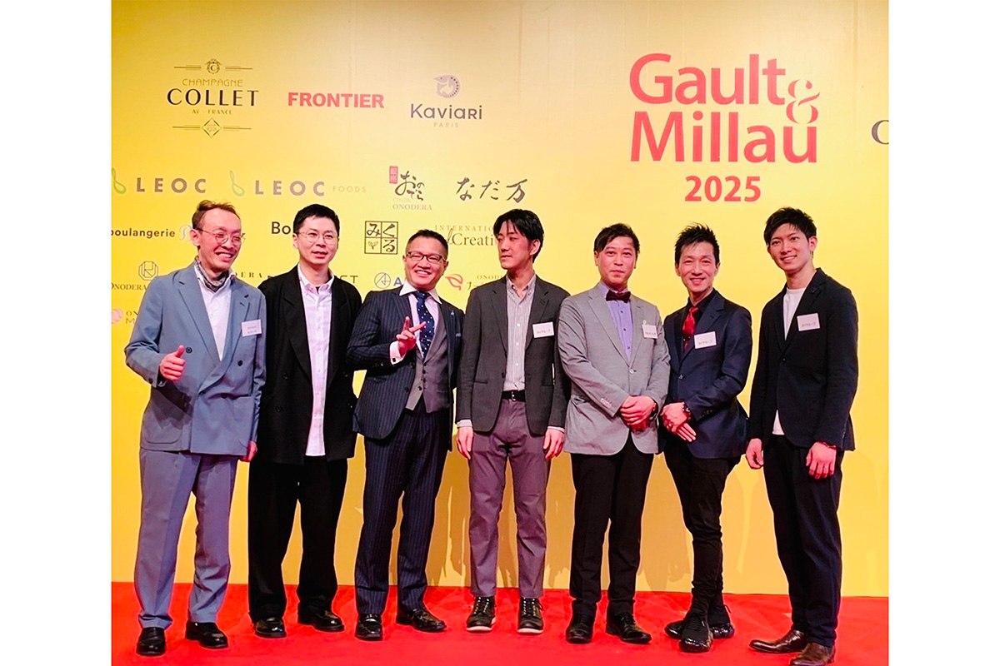
В январе 2025 года ресторан возглавил второй по счёту шеф, уроженец Саппоро. Он работал в ресторане KAMIMURA в Нисэко (о нём в статье о ресторанах Нисэко), в токийском Quintessence, в саппоровских Le Musée IDEA и Le Musée CONCEPT-C, где был шефом. Он сохранил идею своего предшественника, «кухню Ёити», и готовит на французской основе блюда, которые удивляют сочетаниями продуктов и рассчитаны на все пять чувств.
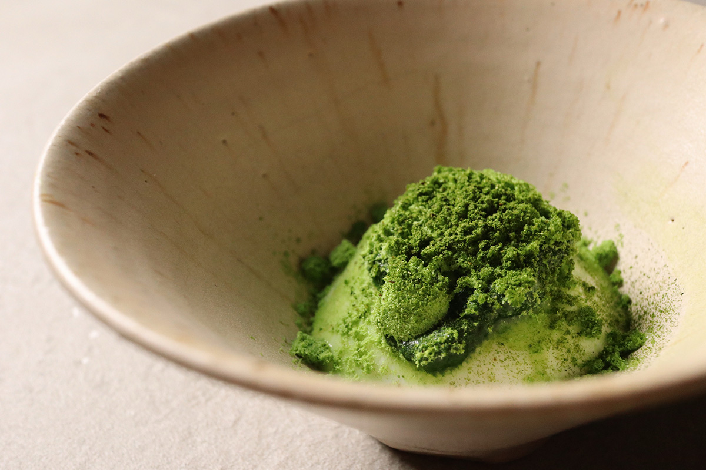
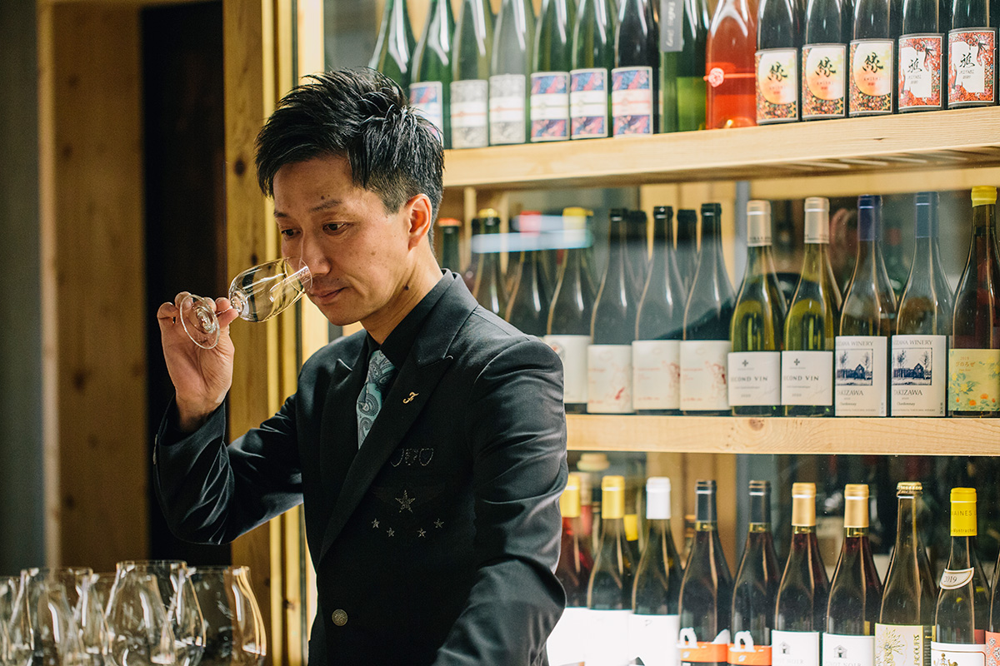
Сомелье и управляющий залом ведёт ресторан с самого открытия. Gault&Millau он называет книгой, о которой мечтал ещё во Франции.
«На церемонии я вспомнил слова владельца, когда мы только начинали: давай сиять не в большом городе, а в провинции. Мы и дальше будем дарить гостям особое время с продуктами и винами, которые растит природа Ёити»
сомелье Yoichi LOOP
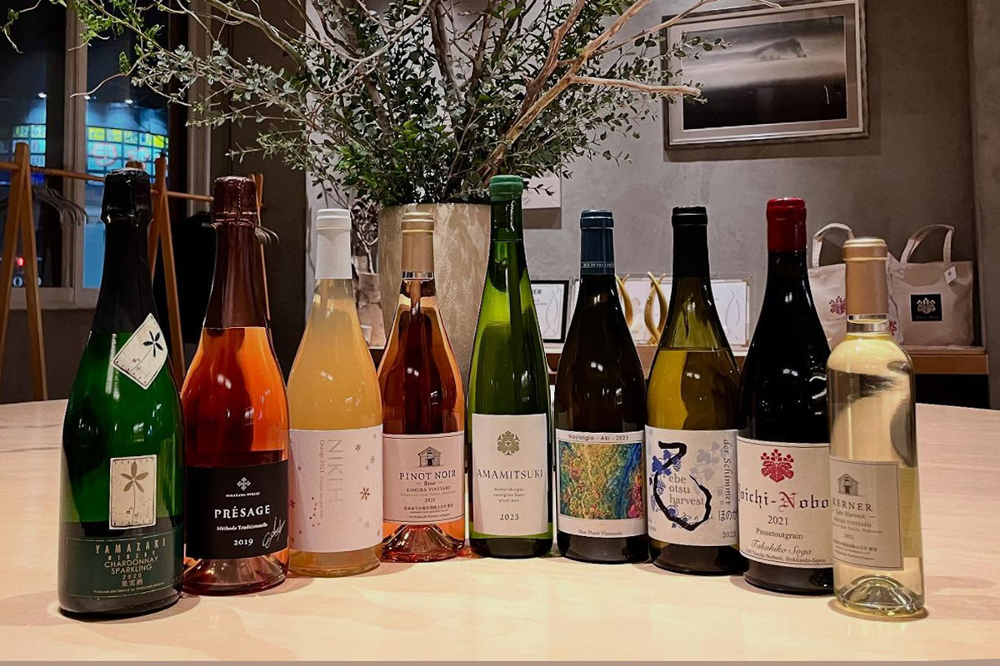
Yoichi LOOP
- Адрес
- префектура Хоккайдо, уезд Ёити, Ёити, Курокава-тё, 4-123
- Телефон
- +81 135-21-7722
- Часы работы
- ужин с 18:00, обед с 12:00 (только пятница, суббота и воскресенье), все гости начинают одновременно
- Выходные
- понедельник
Соба и вино
naritaya: свой виноградник за лесом
Жена любит вино, муж любит сам делать лапшу собу. Когда они решили переехать на Хоккайдо, родину жены, ответ нашёлся сам: соба-ресторан, где наливают вино. Современное здание naritaya стоит на холме в Ники, соседнем с Ёити городке. Если пройти через лес за домом, выйдешь к собственному винограднику хозяев.
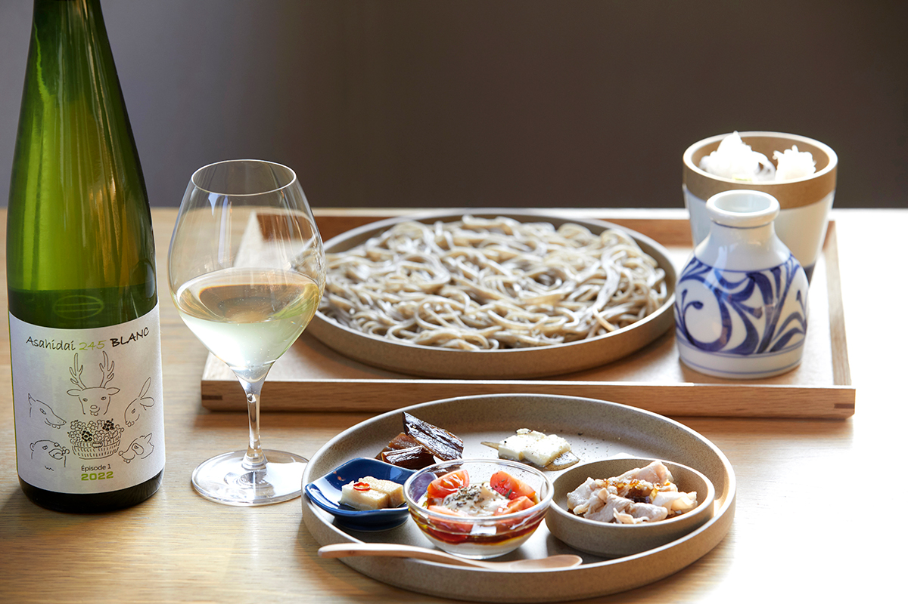
Из этого винограда винодельня Domaine Bless по заказу хозяев делает белое вино полевого купажа из сортов, которые растут вперемешку на одном поле. Его подают бокалами, а по выходным к нему и к местным винам можно взять набор закусок. Свежее, бодрое вино хорошо оттеняет вкус собы, которую мелют на каменных жерновах и режут вручную прямо здесь.
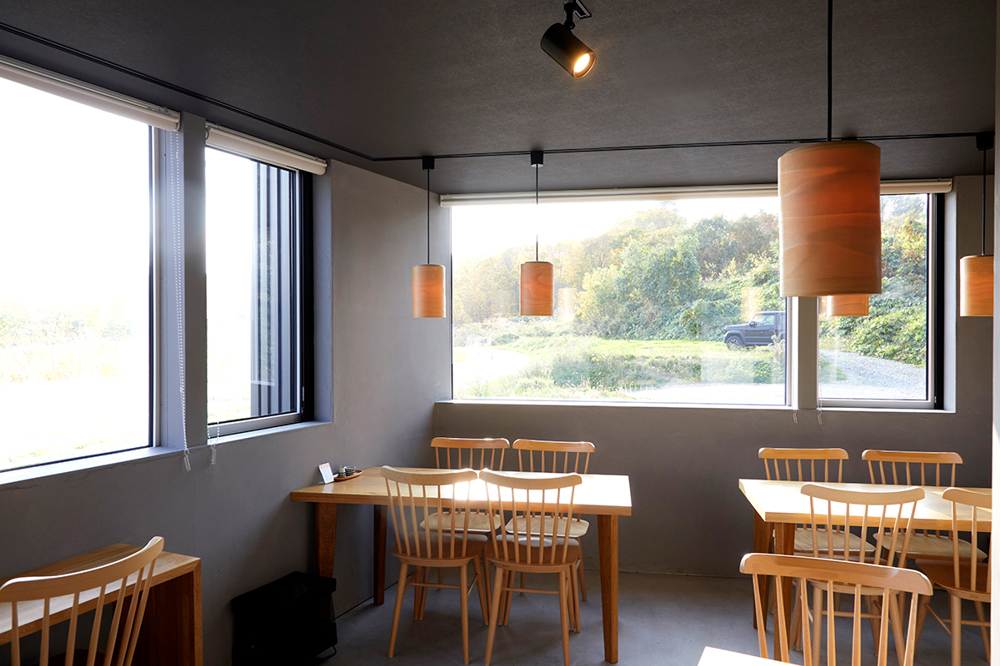
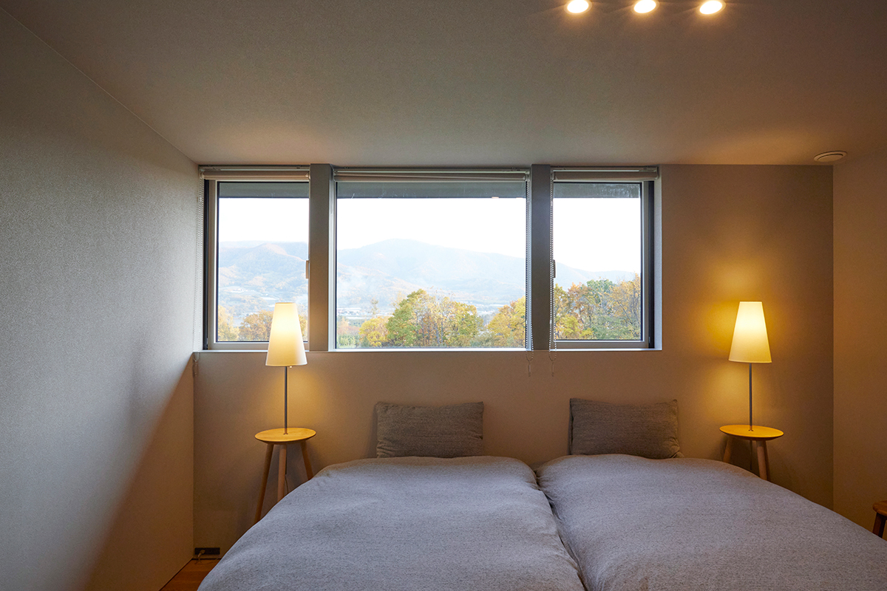
naritaya
- Адрес
- префектура Хоккайдо, уезд Ёити, Ники, Асахидай, 257
- Телефон
- +81 135-32-3877
- Часы работы
- 11:30–14:30 (последний заказ в 14:00, лучше бронировать)
- Выходные
- вторник, среда
- Номера
- от 17 600 иен за номер без питания; ужин для компании от 4 человек по предварительной брони
- Сайт
- naritaya-niki.jp
Винодельня
Domaine Bless: вино с видом на виноградник
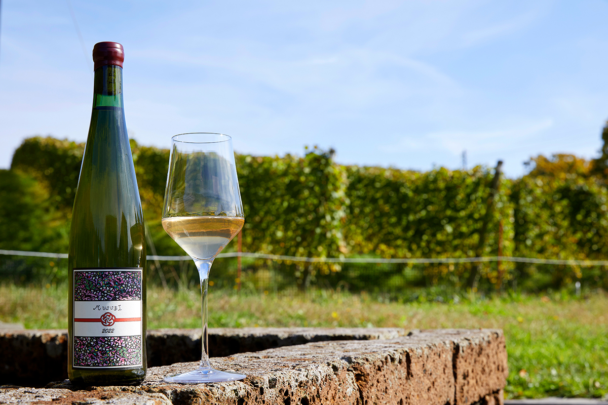
Domaine Bless стоит на холме в Ники, примерно в 15 минутах на машине от района Нобору в Ёити. С весны до конца лета по выходным здесь наливают вино бокалами и подают к нему домашние закуски, приготовленные со вкусом. Вина делает бывший медицинский лаборант, и делает тщательно: они строгие и яркие, и неудивительно, что их быстро раскупают. Сюда стоит заехать и просто как в кафе, оставив на визит побольше времени.
В декабре 2023 года винодельня сменила название: «Ле Рэв», то есть «мечта», стала Domaine Bless, «благословение». Тогда же хозяева готовили к весне гостевое жильё с видом на виноградник.
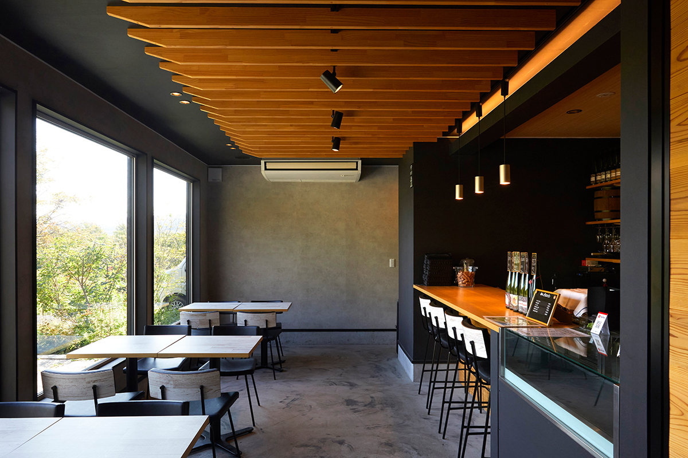
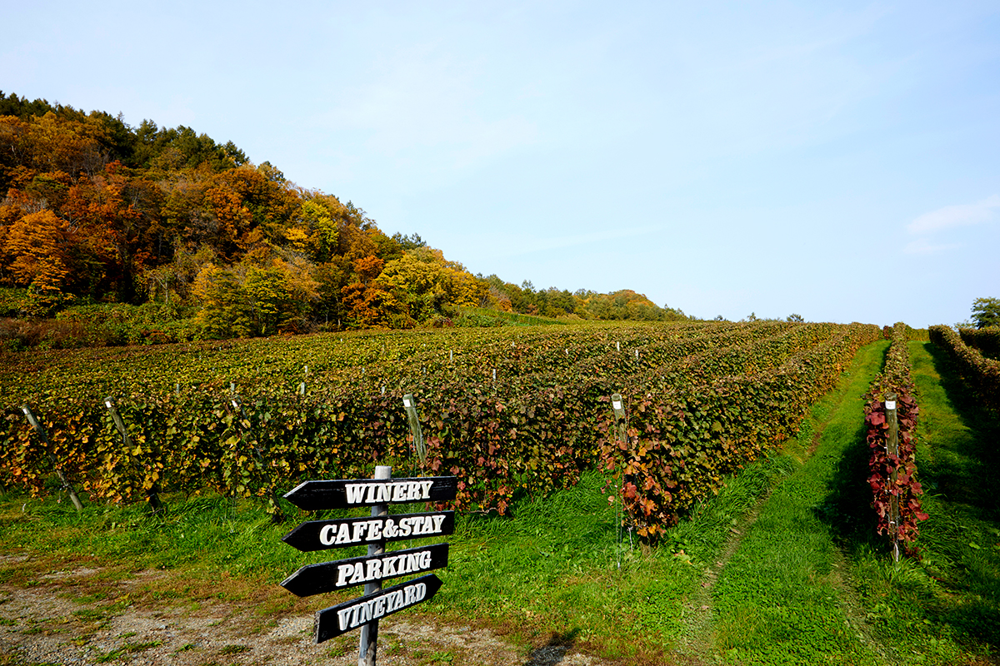
Domaine Bless
- Адрес
- префектура Хоккайдо, уезд Ёити, Ники, Асахидай, 303
- Телефон
- +81 135-31-3311
- Часы работы
- кафе по выходным с мая по сентябрь
- Номера
- от 30 000 иен за номер (план на 2024 год)
Переехал
Sagra: ресторан, который изменил еду Ёити
Долгое время главным ресторанным адресом Ёити была обержа Yoichi SAGRA в районе Нобору, среди виноградников. Шеф и владелец сам ездил к фермерам и рыбакам Ёити, сам выбирал продукты и готовил на основе итальянской кухни, раскрывая их вкус разными способами. К блюдам он подавал местное вино. Слово «терруар» шеф не употребляет: он не винодел. Но интерьер, еда и вино вместе как раз и давали почувствовать землю Ёити.
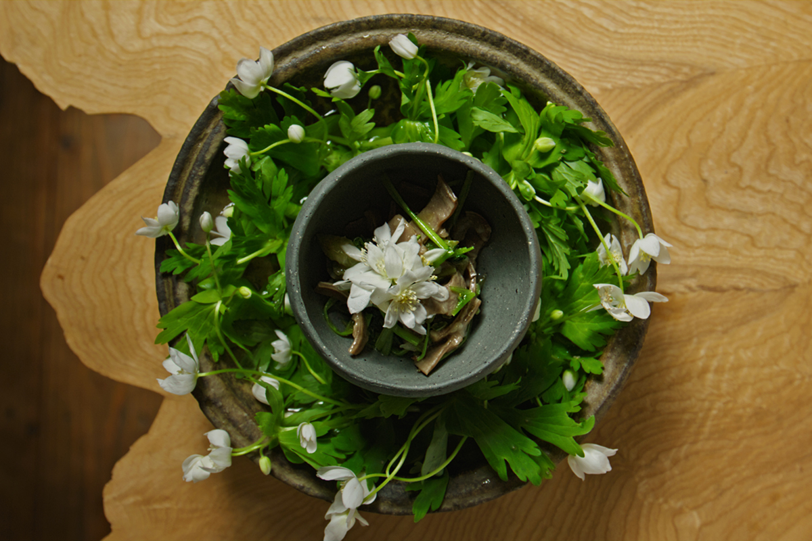
До Yoichi SAGRA мест с местным вином в городе почти не было. Глядя на шефа, и другие рестораны начали работать с продуктами Ёити и наливать вино местных виноделен.
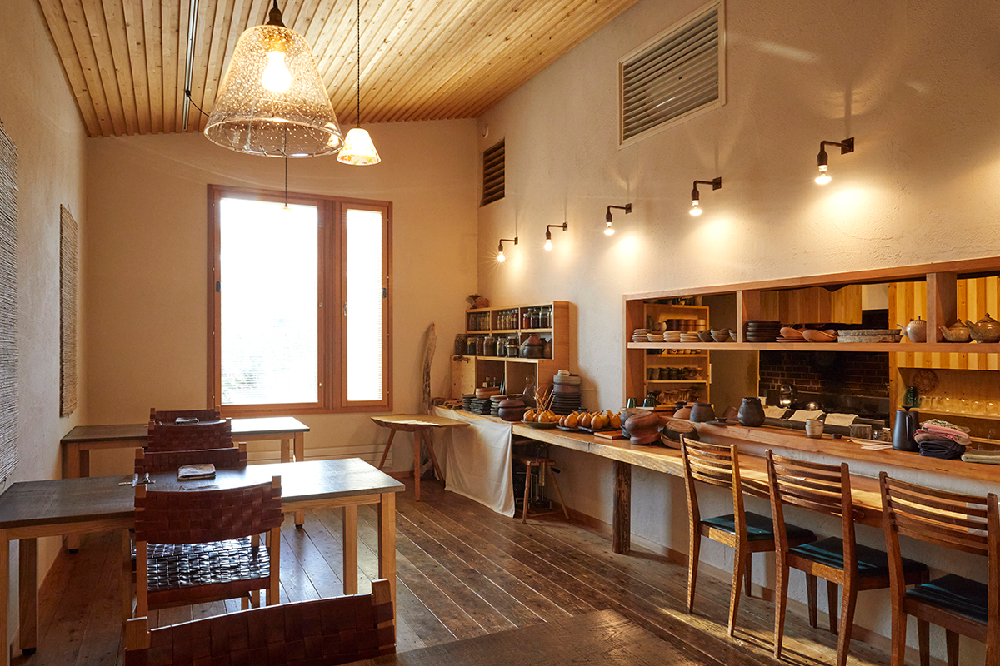
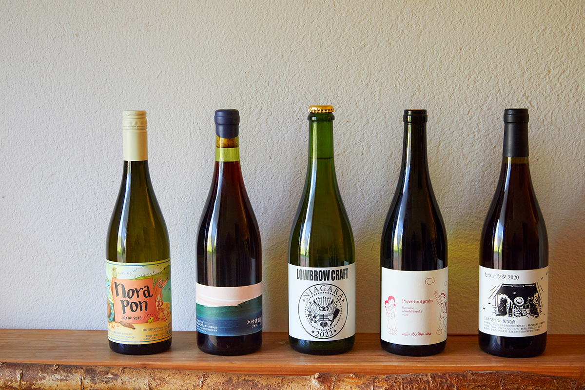
Весной 2026 года ресторан переехал в Китахиросиму, город между аэропортом Нью-Титосэ и Саппоро, на родину жены шефа, и с тех пор называется просто Sagra. Ночёвок, как в Ёити, там нет, а вина по-прежнему с Хоккайдо.
Sagra
- Адрес
- префектура Хоккайдо, Китахиросима, Сакаэ-мати, 1-52, в торговом центре «Тонариэ Китахиросима»
- Часы работы
- по брони только через сайт; как пройти ко входу, сообщают при брони
- Сайт
- sagra.jp
Другие винодельни Ёити, среди них Domaine Takahiko, описаны в статье о винах района Нобору и в статье о Camel Farm Winery.
Фото: Кэнта Ёсидзава.